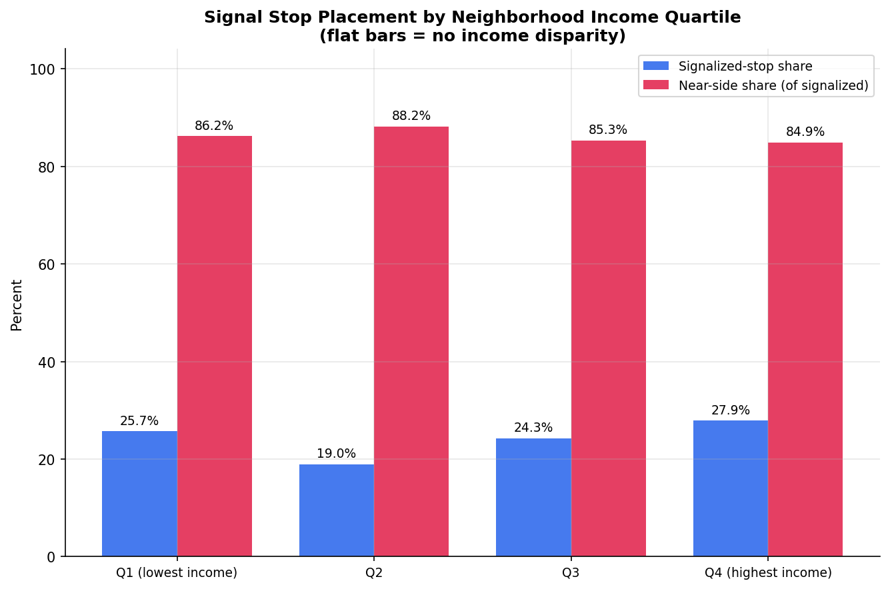
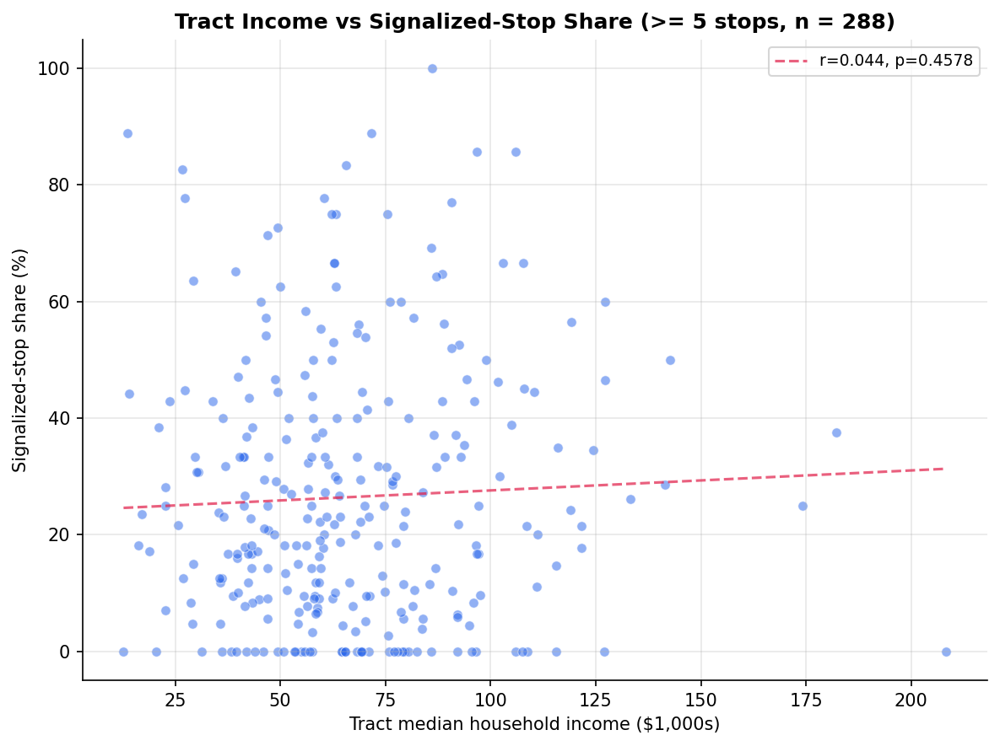
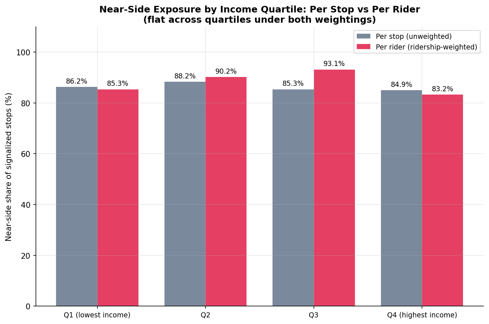

Analysis
58 - Stop Signal Placement Equity
Coverage: Coverage window unavailable for this page.
Built 2026-06-07 20:31 UTC · Commit 6f3a91e
Page Navigation
Analysis Navigation
Data Provenance
flowchart LR
58_stop_signal_equity(["58 - Stop Signal Placement Equity"])
f1_58_stop_signal_equity[/"data/bus-stop-usage/wprdc_stop_data.csv"/] --> 58_stop_signal_equity
t_stop_signals[("stop_signals")] --> 58_stop_signal_equity
15_stop_signals[["PRT Stop-Signal Classification ETL"]] --> t_stop_signals
u1_15_stop_signals[/"data/prt-stop-signals/bus_stops_with_signals_2602.xlsx"/] --> 15_stop_signals
t_stops[("stops")] --> 58_stop_signal_equity
01_data_ingestion[["Data Ingestion"]] --> t_stops
u1_01_data_ingestion[/"data/routes_by_month.csv"/] --> 01_data_ingestion
u2_01_data_ingestion[/"data/PRT_Current_Routes_Full_System_de0e48fcbed24ebc8b0d933e47b56682.csv"/] --> 01_data_ingestion
u3_01_data_ingestion[/"data/Transit_stops_(current)_by_route_e040ee029227468ebf9d217402a82fa9.csv"/] --> 01_data_ingestion
u4_01_data_ingestion[/"data/PRT_Stop_Reference_Lookup_Table.csv"/] --> 01_data_ingestion
u5_01_data_ingestion[/"data/average-ridership/12bb84ed-397e-435c-8d1b-8ce543108698.csv"/] --> 01_data_ingestion
t_census_tracts[("census_tracts")] --> 58_stop_signal_equity
d1_58_stop_signal_equity(("numpy (lib)")) --> 58_stop_signal_equity
d2_58_stop_signal_equity(("polars (lib)")) --> 58_stop_signal_equity
d3_58_stop_signal_equity(("scipy (lib)")) --> 58_stop_signal_equity
d4_58_stop_signal_equity(("geopandas (lib)")) --> 58_stop_signal_equity
classDef page fill:#dbeafe,stroke:#1d4ed8,color:#1e3a8a,stroke-width:2px;
classDef table fill:#ecfeff,stroke:#0e7490,color:#164e63;
classDef dep fill:#fff7ed,stroke:#c2410c,color:#7c2d12,stroke-dasharray: 4 2;
classDef file fill:#eef2ff,stroke:#6366f1,color:#3730a3;
classDef api fill:#f0fdf4,stroke:#16a34a,color:#14532d;
classDef pipeline fill:#f5f3ff,stroke:#7c3aed,color:#4c1d95;
class 58_stop_signal_equity page;
class t_census_tracts,t_stop_signals,t_stops table;
class d1_58_stop_signal_equity,d2_58_stop_signal_equity,d3_58_stop_signal_equity,d4_58_stop_signal_equity dep;
class f1_58_stop_signal_equity,u1_01_data_ingestion,u1_15_stop_signals,u2_01_data_ingestion,u3_01_data_ingestion,u4_01_data_ingestion,u5_01_data_ingestion file;
class 01_data_ingestion,15_stop_signals pipeline;
Findings
Findings: Stop Signal Placement Equity
Summary
PRT's signalized stops — and the operationally worse near-side placement documented in Analysis 53 — show no meaningful demographic disparity. The near-side share of signalized stops holds at roughly 85% across every income quartile (86.2% in the lowest-income quartile vs. 84.9% in the highest), and at the census-tract level neither the signalized-stop share nor the near-side share correlates with median household income, zero-vehicle household share, or Black population share (all |Spearman ρ| ≤ 0.11, all p > 0.07). The null holds when stops are weighted by ridership — per-rider near-side exposure is 85% in the lowest-income quartile and does not rise monotonically with poverty (it is 83% in the highest-income quartile and peaks in the middle), so riders in low-income areas are not disproportionately exposed to near-side stops even after accounting for how heavily each stop is used. Near-side placement is a system-wide legacy inheritance, not a pattern concentrated in disadvantaged neighborhoods. The equity implication is encouraging in one sense — riders in low-income areas are not disproportionately burdened by the worse placement — and practical in another: converting near-side stops to far-side (where warranted) would benefit riders broadly rather than redress a specific inequity.
Key Numbers
- 6,299 stops matched to a census tract; 6,223 have a tract median income.
- Signalized-stop share by income quartile: Q1 25.7%, Q2 19.0%, Q3 24.3%, Q4 27.9% — no monotonic income gradient.
- Near-side share by income quartile: Q1 86.2%, Q2 88.2%, Q3 85.3%, Q4 84.9% — essentially flat.
- Tract-level signalized-stop share (n = 294 tracts with ≥ 5 stops) vs:
- median household income: ρ = +0.044 (p = 0.46)
- zero-vehicle household share: ρ = +0.105 (p = 0.07)
- Black population share: ρ = −0.040 (p = 0.50)
- Tract-level near-side share (n = 201 tracts with ≥ 3 signalized stops) vs:
- median household income: ρ = −0.044 (p = 0.55)
- zero-vehicle household share: ρ = +0.062 (p = 0.39)
- Black population share: ρ = +0.036 (p = 0.62)
- Ridership-weighted near-side share by income quartile: Q1 85.3%, Q2 90.2%, Q3 93.1%, Q4 83.2% — non-monotonic, lowest-income quartile near the bottom of the range (98% of signal stops, 6,174 / 6,299, have usage data).
- Ridership-weighted tract correlations are also null: near-side share vs income ρ = −0.051 (p = 0.48), vs zero-vehicle share ρ = +0.017 (p = 0.82), vs Black share ρ = +0.043 (p = 0.55). The only correlation to cross p < 0.05 is signalized share vs zero-vehicle share (ρ = +0.121, p = 0.04) — the same urban-density signal seen unweighted, and not the near-side outcome.
Observations
- No income gradient in either outcome. Whether a stop sits at a signal, and
whether that signal stop is near-side, is independent of neighborhood income.
The quartile bars are visually flat (see
signal_share_by_income_quartile.png). - The one borderline signal is intuitive and non-significant. Tracts with more zero-vehicle (transit-dependent) households have very slightly more signalized stops (ρ = +0.105, p = 0.07) — consistent with transit-dependent areas being denser, more urban places that simply have more signals overall. It does not reach significance and does not appear in the near-side outcome.
- Near-side dominance is universal. The ~85% near-side share is remarkably stable across the income distribution, reinforcing Analysis 53's reading that near-side placement reflects historical engineering practice applied system-wide, not a targeted or recent siting decision.
- Direction of the (null) effects. A genuine equity problem would have shown lower-income or more-transit-dependent tracts with higher near-side shares. No such pattern exists; if anything the near-side share trends marginally lower in lower-income tracts, the opposite of a disparity.
- Ridership weighting does not change the conclusion. Weighting each stop by
its pre-pandemic weekday usage — so the figures reflect rider experience
rather than stop counts — leaves the picture flat. Per-rider near-side exposure
is 85.3% in the lowest-income quartile, peaks at 93.1% in Q3, and falls to
83.2% in the highest-income quartile: no income gradient, and the most
disadvantaged riders are not the most exposed. This was the one view most
likely to reveal a hidden disparity (busy stops in poor, dense neighborhoods
could have dominated), and it did not. See
nearside_share_rider_weighted.png.
Caveats
- Ecological framing. All results are tract-level associations between demographics and stop placement. They describe neighborhoods, not individual riders, and make no individual-level claim.
- Null result, not proof of no effect. Failing to detect a disparity at the tract level does not prove perfect equity at finer geographies; it means no meaningful tract-level relationship is present in these data.
- Tract assignment is point-in-polygon. Each stop is assigned to the tract containing its coordinate; a stop near a tract boundary serves residents of adjacent tracts whose demographics are not counted.
- Demographic coverage. ACS demographics attach only to stops inside a 5-county PA tract; a small number of out-of-region stops (and tracts with null ACS values) drop from the relevant correlation.
- Ridership data is pre-pandemic. The usage weights come from pre-pandemic weekday boardings/alightings (the WPRDC bus-stop-usage dataset, also used by Analyses 32 and 34). Post-pandemic ridership patterns have shifted; if the shift correlated with both demographics and near-side placement it could in principle move the weighted result, though the per-stop (unweighted) null is unaffected by this.
- Usage coverage is 98%, not 100%. 6,174 of 6,299 tract-matched signal stops carry a usage record; the 125 without one drop from the weighted figures only (they remain in the per-stop figures). Their omission cannot manufacture a gradient that the per-stop view does not show.
Validation
- Data source verified.
stop_signals(pipeline 15) validated against theSTOP_SIGNALSschema withvalidate(..., subset=True); demographics come from the sharedassign_stops_to_tractshelper (point-in-polygon tocensus_tracts), the same path used by Analysis 04. - Scope match. Stops are joined on the PRT internal
stop_id(the namespace shared bystop_signals, thestopstable, and the WPRDC usage CSV); 6,299 of 6,306 PRT stops carry a resolvedstop_idand match, and 6,174 of those (98%) carry pre-pandemic weekday usage for the ridership-weighted view. - Null handling. Stops without a tract income are dropped from the
income-quartile view; share denominators are guarded with
when(... > 0)so a tract with zero households or zero signalized stops yields null (dropped bycorrelate), never a divide-by-zero or a NaN counted as a real value. In the ridership-weighted aggregates, usage is summed withfilter, so the 125 usage-null stops contribute 0 to both numerator and denominator (they drop out) rather than injecting a null weight. - Aggregate sanity check. Overall signalized share (~24%) and near-side share (~85%) match the system totals in Analysis 53, confirming the join did not drop or duplicate stops.
- Surprising-result check. The result is a null, which is the expected direction here (a legacy system-wide default should not track income); the one borderline correlation (zero-vehicle share) was examined and explained as urban density, not a disparity.
- Robustness to weighting. The null was re-tested with stops weighted by ridership — the view most likely to surface a hidden disparity — and the conclusion held (no income gradient, near-side correlations still null). A result that flipped under weighting would have been a red flag; it did not.
- Small-sample routes/areas flagged. Tracts below 5 stops (signalized share) and 3 signalized stops (near-side share) are excluded; thresholds are reported in the output and chart titles.
- Multicollinearity. Not applicable — these are bivariate Spearman correlations, not a multi-predictor regression.
- Ecological framing. Documented in Caveats; all language is tract-level.
Output

Signalized-stop share and near-side share by neighborhood income quartile (flat across quartiles).

Scatter of tract median household income against signalized-stop share with fitted trend.

Near-side share by neighborhood income quartile, per stop vs. weighted by ridership (flat under both).
No interactive outputs declared.
Per-stop signal class, signalized flag, ridership, census tract, and tract median household income.
Preview CSV
Per-tract signalized-stop and near-side shares (per-stop and ridership-weighted) with income, vehicle-access, and race demographics.
Preview CSV
Signalized and near-side shares aggregated by income quartile, per-stop and ridership-weighted.
Preview CSV
Spearman correlations of signalized/near-side share against income, zero-vehicle share, and Black population share, for per-stop and per-rider weightings.
Preview CSV
Methods
Methods: Stop Signal Placement Equity
Question
Do stops at traffic signals — and specifically the operationally worse near-side placement — cluster in lower-income, more transit-dependent, or higher-minority neighborhoods? In other words, is the legacy near-side default (Analysis 53) distributed unequally across the population it serves?
Approach
- Load PRT's authoritative per-stop signal classification from the
stop_signalstable (signal_class,has_signal). - Assign every stop to its containing ACS census tract via point-in-polygon
(
assign_stops_to_tracts), attaching the tract's median household income, total/zero-vehicle households, population, and Black (non-Hispanic) population. - Income-quartile view. Bin stops by their tract's median household income into quartiles. For each quartile compute (a) the signalized-stop share (fraction of stops at a signal) and (b) the near-side share (fraction of signalized stops that are near-side). A disparity would show as a monotonic gradient across quartiles.
- Tract-level correlations. For each tract with enough stops, compute the signalized-stop share and near-side share, then correlate (Spearman) against three demographic measures: median household income, zero-vehicle household share, and Black population share. Spearman is used because the demographic distributions are skewed and the relationship need not be linear.
- Minimum-sample thresholds. Tracts need ≥ 5 stops for the signalized-share correlation and ≥ 3 signalized stops for the near-side-share correlation; thresholds are reported. Quartile shares use all stops with a tract income.
- Ridership-weighted view. A per-stop count treats a busy downtown stop and a rarely used suburban stop equally, but riders do not experience them equally. We therefore recompute both the quartile shares and the tract-level shares weighted by pre-pandemic weekday usage (boardings + alightings per stop, from the WPRDC bus-stop-usage CSV). The weighted near-side share answers "what fraction of signalized-stop boardings happen at a near-side stop?" If low-income riders disproportionately use near-side stops, the per-rider view would show a gradient the per-stop view misses. Spearman correlations are re-run on the ridership-weighted tract shares.
Data
stop_signalstable inprt.db(PRT authoritative per-stop signal class; built bypipeline/15_stop_signals/). Join key: PRT internalstop_id.stopstable inprt.db(lat/lon for tract assignment, via the sharedassign_stops_to_tractshelper).census_tractstable inprt.db(ACS demographics: median household income, households_total, households_zero_vehicle, population, pop_black_nh).data/bus-stop-usage/wprdc_stop_data.csv— pre-pandemic weekday boardings and alightings per stop, keyed by the same PRT internalstop_id; used for the ridership-weighted view. Covers 98% (6,174 / 6,299) of tract-matched signal stops; the rest have no usage record and drop out of the weighted figures only.- Scope caveat: ACS demographics are only joined for stops inside a 5-county PA tract; a handful of out-of-region stops get null demographics and drop out.
Output
output/stop_equity.csv— per-stop: stop_id, signal_class, has_signal, usage, geoid, median household income.output/tract_equity_summary.csv— per-tract signalized/near-side shares (per-stop and ridership-weighted) with demographics.output/income_quartile_shares.csv— quartile shares, per-stop and ridership-weighted.output/demographic_correlations.csv— Spearman correlations of each share against the three demographics, for both per-stop and per-rider weightings.output/signal_share_by_income_quartile.png— bar chart of signalized-stop share and near-side share by income quartile.output/tract_income_vs_signal_share.png— scatter of tract median income vs. signalized-stop share with fitted trend.output/nearside_share_rider_weighted.png— near-side share by income quartile, per stop vs. per rider (ridership-weighted).
Source Code
|
Sources
| Name | Type | Why It Matters | Owner | Freshness | Caveat |
|---|---|---|---|---|---|
| data/bus-stop-usage/wprdc_stop_data.csv | file | Pre-pandemic weekday boardings and alightings per stop (WPRDC), keyed by PRT internal stop_id; used to weight signal-stop placement by ridership. | Local project data owner not specified. | Snapshot file; refresh by rerunning its pipeline step. | May lag upstream source updates. |
| stop_signals | table | Primary analytical table used in this page's computations. | Produced by PRT Stop-Signal Classification ETL. | Updated when the producing pipeline step is rerun. | Coverage depends on upstream source availability and ETL assumptions. |
Upstream sources (1)
|
|||||
| stops | table | Primary analytical table used in this page's computations. | Produced by Data Ingestion. | Updated when the producing pipeline step is rerun. | Coverage depends on upstream source availability and ETL assumptions. |
Upstream sources (5)
|
|||||
| census_tracts | table | Primary analytical table used in this page's computations. | Project pipeline owner not linked. | Refresh cadence unknown. | Coverage depends on upstream source availability and ETL assumptions. |
| numpy | dependency | Runtime dependency required for this page's pipeline or analysis code. | Open-source Python ecosystem maintainers. | Version pinned by project environment until dependency updates are applied. | Library updates may change behavior or defaults. |
| polars | dependency | Runtime dependency required for this page's pipeline or analysis code. | Open-source Python ecosystem maintainers. | Version pinned by project environment until dependency updates are applied. | Library updates may change behavior or defaults. |
| scipy | dependency | Runtime dependency required for this page's pipeline or analysis code. | Open-source Python ecosystem maintainers. | Version pinned by project environment until dependency updates are applied. | Library updates may change behavior or defaults. |
| geopandas | dependency | Runtime dependency required for this page's pipeline or analysis code. | Open-source Python ecosystem maintainers. | Version pinned by project environment until dependency updates are applied. | Library updates may change behavior or defaults. |